初学者向けチュートリアル
このチュートリアルは初学者向けですが、ツールの基本操作などの解説は行なっていません。 Unity で開発する上での Tips を交えつつ、開発初期段階の開発フローの説明、当パッケージの利用方法を紹介し、その中でプログラムコード内の考え方等を網羅的に解説していきます。
GarageKit for Unity とは？
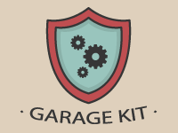基本的なシーンの状態遷移機能をテンプレート化、いくつものユーティリティスクリプトとともに C# のフレームワークとして利用できるようにした便利 Unity パッケージです。
プログラミングデザインパターンの中の一つ、State パターンをベースにした遷移システムは、基本ルールを学ぶことで、あらゆるケースに対応できるようになります。コード内に一定のルールを持つことは重要です。交通整理されて統一感のあるコードベースが、バグを減らし秩序をもたらすきっかけになるでしょう。
ほとんどの機能は Unity MonoBehaviour ライフサイクルに則って単体コンポーネント化されており、GameObject にスクリプトをアタッチするだけで動作します。フレームワークレイヤーとしては層の薄いものとなっているので、他のアセットを組み合わせて利用するのも容易です。
その名前の通り、プロジェクトの開始を加速させるためのツールです！
1. 準備
1-1. プロジェクトの作成
新規プロジェクトを作成します。
1-2. PackageManager の設定
GarageKit を利用する際は、幾つかの依存するライブラリのインポートが必要になります。 （GarageKit.unitypackage をインポート後でも問題ありません。）
メニューから Window/PackageManager を開きます。
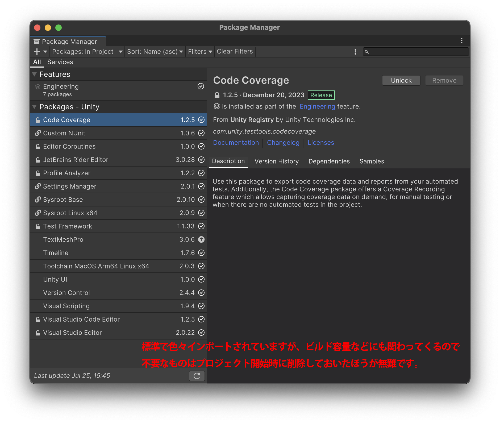
最初に不要なパッケージは削除してしまって構いません。必要になったら都度追加するのが良いでしょう。
- Unity は初期状態でいろいろインポートされています。ビルド容量等にも関係してくるため、できるかぎり不要なパッケージは削除するようにしましょう。不必要なパッケージが原因の問題に遭遇するケースもあります。
- 作業開始時点では、
UnityUI、TextMeshProとVisualStudioEditorがあれば十分でしょう。（依存関係にあるパッケージは自動でインポートされます。）
以下のパッケージがプロジェクトにインポートされていなければ、追加インポートします。
- from UnityRegistry
TextMeshPro: uGUI でテキスト表示を扱うためのパッケージ
- from AssetStore
DOTween: アニメーション用のスクリプトパッケージ(Free)
1-3. OpenUPM
次に、OpenUPM から以下のパッケージを追加インポートします。
Note
OpenUPM: Unity ライブラリのオープンソースのパッケージマネージャ / レジストリ。利用したことが無い場合はこの機会に使い方を学習しましょう。
https:/openupm.com/docs/getting-started-cli.html
In-game Debug Console: 主にデバッグ用途で実行時にランタイムコンソールを表示するパッケージUniTask: C# の非同期処理を Unity で扱い易くするパッケージ
(Win)コマンドプロンプト / (Mac)ターミナル を開き、プロジェクトのディレクトリに移動して、上記2つのパッケージの openupm コマンドを実行します。
サイト内の右上のボタンをクリックすると必要なコマンドがクリップボードにコピーされるので便利です。そのままペーストして実行します。
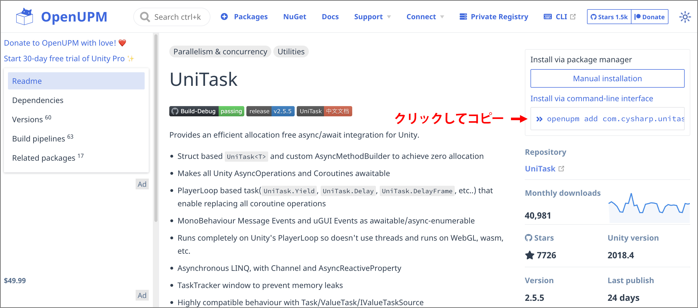
Unity に戻り、Project ウィンドウを確認します。
Packages ディレクトリについて
PackageManager や OpenUPM でインポートされたパッケージは、プロジェクトデータとは区別されて Packages ディレクトリとして管理されます。
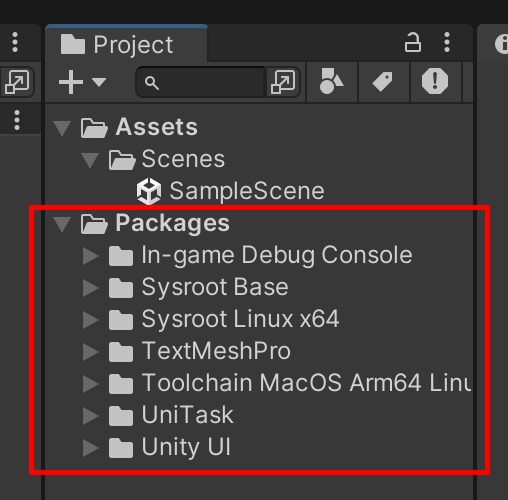Packages ディレクトリとして管理されている外部パッケージは自分で編集することができません。これは外部パッケージのソースコードを壊すことができないという点で安全であると言えます。また、作業 PC 環境の移動が必要になった場合や、他人にプロジェクトデータを渡す際など、プロジェクトデータ復元の際、指定パッケージのダウンロードができれば、必ず環境の再現が可能であるという意味にもなります。
もちろん、どうしても改造が必要な場合も存在します。この場合は PackageManager を利用せずに、パッケージデータを手動でプロジェクトにインポートして管理することで編集が可能になります。
1-4. GarageKit パッケージのインポート
それでは、GarageKit.unitypackage を Project ウィンドウにドラッグドロップしてインポートします。
インポートが完了すると、プロジェクト設定環境によってエラーが表示される場合があります。プロジェクト設定を変更して修正していきます。
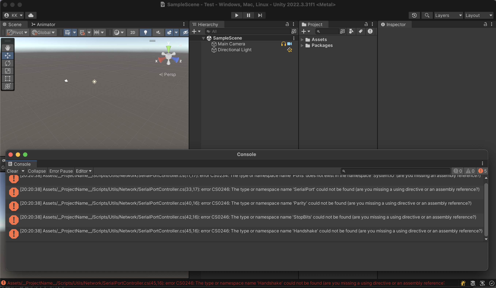
メニューから File / BuildSetting を開き、TargetPlatform を Windows にします。
メニューから File / BuildSetting / PlayerSetting を開き、Configuration の項目から ApiConpatibilityLevel を .NET Framework に変更します。
Note
エラーが表示されるソースは SerialPortController.cs と StandalonePlayerResolutionHelper.cs です。.NET Standard 2.1 にはコンパイルに必要なクラスが含まれていないため表示されるエラーです。
1-5. プロジェクト構成の整理
エラーが解決できたら、再度 Project ウィンドウを確認します。
手動インポートしたデータがフォルダに分かれて追加されています。プロジェクト初期作成で自動作成されるサンプルシーンのデータは不要なので Scenes フォルダごと削除します。
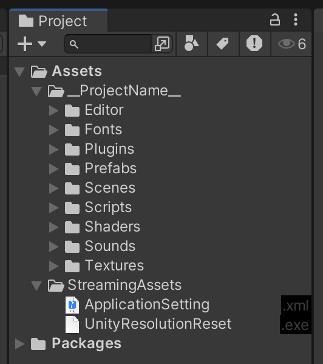プロジェクトのデータは全てこの Project ウィンドウで管理することになります。このウィンドウは実際のディレクトリ内のファイルの状態が表示されています。
Project ウィンドウのファイルを選択した状態で右クリックメニュー(Win)Show in Explorer / (Mac)Reveal in Finder から OS のファイルブラウザで開くことができます。実際のフォルダの場所を確認してみてください。
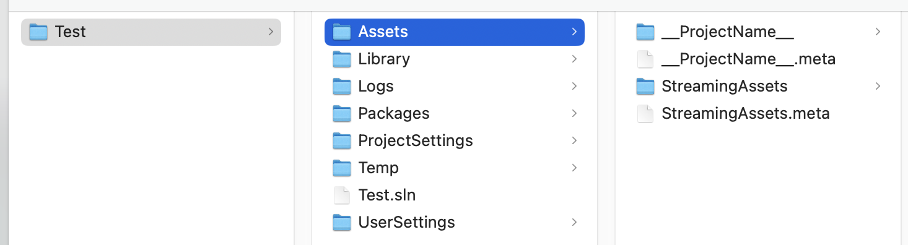
Unity に戻り、__ProjectName__ フォルダの名前を実際の作業プロジェクト名に変更します。Project ウィンドウでリネーム操作をしてください。
Note
__ をつけたままにすることをお勧めしますが、任意です。これはプロジェクトデータフォルダが他のフォルダに埋もれてしまわないように、見つけやすくする有効な手段の一つです。ProjectWindow では名前順に自動ソートされます。
Note
また、以降全ての開発に関わる作業において、日本語ファイル名はできるだけ利用しないようにしてください。 プログラム開発において日本語文字（2バイト文字）は今だ二級市民であり、不具合発生の原因になる場合があります。
Assets 以下の第一階層はデータ整理の重要な起点です。
通常、プロジェクトの終盤にはあらゆるデータがプロジェクトに取り込まれているため、戦略無しに作業を進めていてはプロジェクトフォルダ内は簡単にカオスとなるでしょう。（直近の作業中は問題無いかもしれません。時間が経って久しぶりにデータを開いたときにすぐに把握できるでしょうか？他人がプロジェクトデータを引き継いだ場合はどうなるでしょうか？）
Assets 以下にはすでに他のフォルダも展開されています。外部の .unitypackage を手動でインポートした場合、多くの場合は第一階層にデータが展開されます。行儀の良いパッケージであれば、一つのフォルダにまとまっている場合が多いので、Assets 以下第一階層には自然とインポートパッケージごとのフォルダが作成されます。
プロジェクトデータのフォルダ __ProjectName__ もパッケージの一つと考えればデータ整理のルールは明確になります。この先、外部の.unitypackage をインポートする際は、それぞれ第一階層で別フォルダにまとめて管理するようにしましょう。
現状の Assets 以下、第一階層は以下のフォルダ構成になっています。
Assets
|- __TestProject__ : プロジェクトデータ
|- StreamingAssets : Unity 標準の外部ファイル読み込み用フォルダ
プロジェクト内で利用する各種データのためのフォルダをあらかじめ用意しています。この中でデータを整理するようにし、プロジェクト内のデータの位置を常に把握するように心掛けましょう。
Assets
|- __TestProject__
|- Animations : アニメーションデータ用(.anim)
|- Editor : Editor スクリプト
|- Fonts : フォントデータ用(.otf .ttf など)
|- Materials : マテリアル用(.mat)
|- Meshes : メッシュデータ用(.mesh)
|- Models : 3D モデルデータ用(.fbx など)
|- Plugins : プラグイン(.dll など)
|- Prefabs : プレハブデータ用
|- Scenes : シーンデータ用(.unity)
|- Scripts : スクリプト用(.cs)
|- Shaders : シェーダー用(.shader など)
|- Sounds : 音声ファイル用(.wav .mp3 など)
|- Textures : 画像ファイル用(.png .jpg など)
データや情報を上手に整理することは、プログラムの基本だということを忘れないでください。
プログラミングでは良く聞くことの多い「プログラミングデザインパターン」ですらも、根本的にはソースコードの整理術の話です。どのように整理して構造化すると良いか？という知見の話であり、構造を考えやすくするための方法論であり、結果的には修正しやすく拡張しやすいプログラムの構築方法に繋がっていきます。
特殊フォルダについて
Unity ではあらかじめ予約されている決まった名前にすることで、特殊な動作をするフォルダがいくつか存在します。StreamingAssets フォルダもその内の一つです。
よく見るものでは以下のようなものがあります。
| フォルダ名 | 機能 |
|---|---|
| StreamingAssets | Unity 標準の外部ファイル読み込み用フォルダ。ビルド時に自動でオリジナルファイルのままコピーされパッケージングされる。 |
| Resources | ビルドされる際にコンパイル済みデータとしてパッケージングされる。古い機能であり利用は非推奨。 |
| Editor | UnityEditor 自体の機能を拡張する Editor スクリプトを配置する。中のソースファイルは自動でコンパイルされ、Editor に即時反映される。 |
| Plugins | プラグインを配置する。Windows の場合は C++ や C# で作成された一般的な .dll を配置し、C# のソースからアクセスして利用可能。 |
| Plugins / iOS | iOS をターゲットにする場合に、Xcode プロジェクトに組み込まれてビルドされる。 |
| Plugins / Android | Android をターゲットにする場合に、.apk .aab または AndroidStudio プロジェクトに組み込まれてビルドされる。AndroidManifest.xml を配置した場合は、ビルド後処理で強制的に上書きできる。 |
Note
この他にも存在するので Unity ドキュメント で確認しておくと良いでしょう。
1-6. Git
実行する準備が整いました。が、実行して作業を始める前にバージョン管理ツールである Git を使って現在の状態をコミットします。これは最も重要な開発作業の一つです。
Note
Git の利用方法がわからない場合、まずは基本操作である、リポジトリの初期化、ステージング、コミット、プッシュ の操作方法を確認してください（Unity の操作ではないため、ここでは詳しく説明は行いません）。
Unity では プロジェクトフォルダ以下 を Git のバージョン管理対象にしますが、全てのデータを管理する必要はありません。Unity プロジェクトフォルダ内には管理不要のデータが多く存在し（自動で生成されるキャッシュや、毎コンパイル時の中間ファイルなど）、それぞれファイル容量も大きいため、それらを除くために .gitignore の設定を行います。
Git 初期操作例
- プロジェクトフォルダ内で Git リポジトリの初期化を行います。
.gitignoreファイルを用意して、管理対象外フォルダの設定をします。github には各開発環境ごとのサンプル gitignore があるので、そのままコピーしてくるのが簡単です。Unity に限らずどの開発環境でも利用できます。- ファイルをステージングして初回コミットします。
これでいつでも作業をリセットし、ここに戻ってこれるようになりました。開発中は各作業の中間では必ず commit していきます。サーバーにあるリモートリポジトリへの push も忘れないでください。
Note
Git を利用することはデータバックアップの意味でもあります。Git を利用していつでもどの作業バージョンにでも復元できるので、以下の行為は意味がありません。実施しているのなら止めて Git の機能を利用するようにしてください。
- 日付名で作業フォルダをコピーしておくこと。
- プロジェクト内に2度と利用しない過去のデータを「一応」含めておくこと。
- シーン内にもう既に利用されていない古いオブジェクトを非表示で置いておくこと。
- ソースコード内に使われていない古いコードを残しておくこと。
2. 実行
2-1. サンプルシーンを開く
__ProjectName__/Scenes/Main.unity を開きます。
デバッグ用の追加アセットをインポートしていないのでエラーが表示されますが、今は無視して構いません。Managers / DebugManager 以下にある Missing Prefab 状態の [Graphy] オブジェクト を削除します（必要であれば AssetStore から DL して事前にインポートしておくことで利用することもできます）。
Graphy: 実行時のFPSや使用メモリを確認表示できるパッケージ
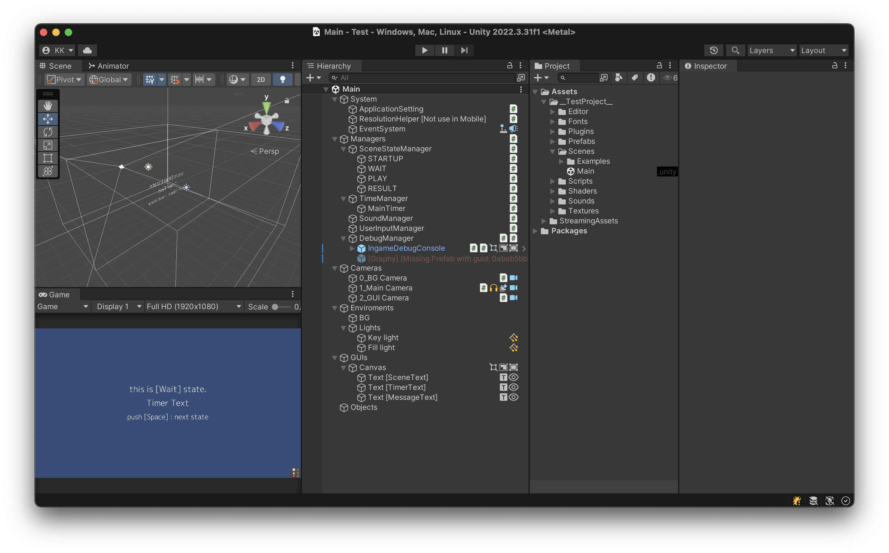
このシーンでは、基本的に必要なものは既にセットアップ済みとなっており、プログラム設計が固まっているのであれば、ここからすぐにでも開発作業を始められます。いわゆる開発環境での Scaffolding というもので、作業最初の面倒で煩わしい部分をショートカットします。
また、すでに Unity を触っているならば見慣れない要素があるかもしれません。Hierarchy ウィンドウにはアイコンが並んでいますが、これは各 GameObject にアタッチされているコンポーネントが表示されてます。
GameObject の一つ一つが何の機能を持っているのか一目瞭然となるこの機能は Editor フォルダに入っている EditorEnhancements という Editor 拡張の機能です。アイコンをクリックすることでコンポーネントを直接 ON / OFF することも可能です。
Hierarchy ウィンドウは、現在のプログラムの状態を表します。常に状態を把握するために一目瞭然にしておくことは重要です。
2-2. サンプルシーンの実行
シーンを実行してみましょう。
このシーンでは場面が以下の4つに分かれています。この場面を State と呼びます。スペースキーを押すことで State が遷移していきます。画面のテキスト表示で現在の状態を確認できます。
| No | ステート名 | 状態 | 処理 |
|---|---|---|---|
| 1 | Startup | 実行開始 | 再生後すぐに Wait に遷移 |
| 2 | Wait | 待機状態 | スペースキーで Play に遷移 |
| 3 | Play | 実行状態 | スペースキーでタイマーがカウントダウンし Result に遷移 |
| 4 | Result | 完了状態 | スペースキーで Wait に遷移 |
挙動を確認したら停止して、シーンを細かく見てくことにします。
Note
プログラム開発中はどの段階であっても、常に動くものを手元に置くようにしてください。現状がすでに動くものが手元にある状態です。プログラム開発は、「ゼロから一つ一つ積み上げて行く」という作業イメージではなく、「すでに動作するものを機能や完成度を徐庶に上げて行く」というイメージで作業をすると間違いがありません。
Note
アプリケーションをいつの段階でもビルドして、リリース時の状態を試してみることができます。最終形を早い段階でイメージして確認しておくのも重要な工程の一つです。
3. シーン構成
ここからは、現在のシーンの全体構成から解説し、各コンポーネントの役割やステート遷移の説明などの順で進めていきます。各プログラムの詳細解説はスクリプトリファレンスで確認してください。
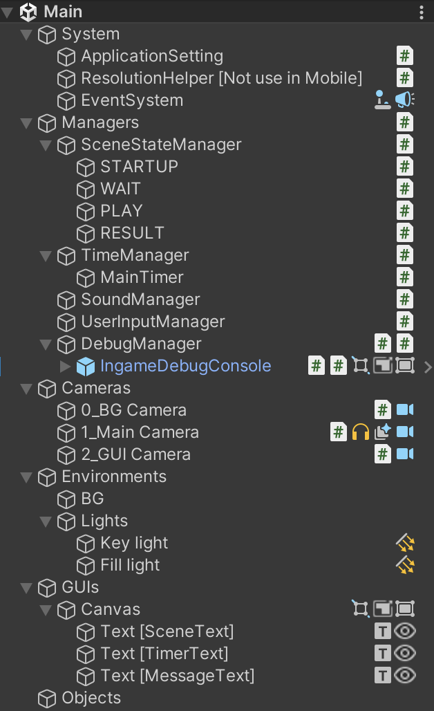3-1. System グループ
Hierarchy 内の System オブジェクトでまとめられたグループにはその名前の通り、プロジェクトの全体に関わる機能のオブジェクトがあります。全体に関わる機能を追加する場合は同様にここにまとめていくと良いでしょう。
System / ApplicationSetting
ビルドされたアプリケーションの設定変更のため、外部テキストファイル (.xml) を読み込んでプログラムに反映させることができます。デフォルトは StreamingAssets フォルダから ApplicationSetting.xml を読み込むようになっており、必要な xml ファイルはパッケージをインポート時にすでにプロジェクトに配置されています。
ApplicationSetting.xml
<?xml version="1.0" encoding="utf-8"?>
<data>
<!-- デバッグ true/false -->
<item name="IsDebug" value="true"/>
<!-- ゲーム時間 秒 -->
<item name="GameTime" value="10"/>
<!-- 表示テキスト -->
<item name="Text" value="this is test."/>
</data>
Note
xml で用意されている項目値はサンプルであり、適宜修正して利用します。混乱防止のため、利用していない不必要な項目は必ず削除してください。 また、設定値の説明や初期値などコメントを追加しておくと良いでしょう。
bool isDebug = ApplicationSetting.Instance.GetBool("IsDebug");
int gameTime = ApplicationSetting.Instance.GetInt("GameTime");
string text = ApplicationSetting.Instance.GetString("Text");
GameObject としてシーンに存在することから、このクラス自体も単独動作する MonoBehaviour であり、 xml の読み込みは Awake() で行われています。つまり値を利用する際は Start() 移行のタイミングである必要があります。
Note
MonoBehaviour が用意する関数の実行順を理解していない場合は、Unity ドキュメントを確認してください。
取得できる値は基本型の他、配列や Vector クラスもサポートし、xml に値が無い場合の初期値も指定できます。
.unitypackage ファイルへのパッケージングの都合上、インスペクタのデフォルト設定が STREAMING_ASSETS からの読み込みとなっていますが、PROJECT_DIRECTORY に設定することをお勧めします。ビルドした後の StreamingAssets フォルダ階層が深い場所にあるため、実際の値変更時に煩わしいためです。もちろん、読み込み場所の設定変更後は xml ファイルを該当位置に移動してください。読み込み場所が PROJECT_DIRECTORY の場合は Assets フォルダがある場所、プロジェクトフォルダの直下です。
System / ResolutionHelper
StandalonePlayerResolutionHelper.cs
ビルドされた Windows の Unity アプリケーションは、実行時自身のウィンドウ解像度情報をレジストリに保存します。次回起動時もその値を引き継いでアプリケーションウィンドウが表示されますが、不意に誤った解像度に変更されてしまった場合（ディスプレイケーブル接続が切れた場合など）、その情報がレジストリに残ってしまう影響で、正常な解像度で表示されなくなってしまいます。
Unity の仕様であるこの挙動を回避するため、このコンポーネントはアプリケーション終了時にレジストリから解像度情報を削除するという動作をします。
インスペクタには、ビルド設定と一緒の情報（CompanyName / ProductName）を入力してください。また、この機能は Windows 専用であり、その他のプラットフォームをビルドターゲットとする場合は不要なので、削除するようにしてください。
Note
一点注意としては、この機能は MonoBehaviour の OnApplicationQuit() で動作するため、「ウィンドウを閉じる」「Application.Quit() を呼ぶ」などの正常終了処理時のみに実行され、タスクマネージャーなどからの強制終了の場合等には実行されません（UPS:無停電電源装置等からの Windows シャットダウンコマンドの場合も動作しません）。
System / EventSystem
uGUI での操作イベント処理を駆動させるための Unity 標準の必須システムオブジェクトです。
3-2. Managers グループ
このフレームワークの根本を司るオブジェクト群です。通常、マネージャークラスはここに用意されている以外は必要が無いことを理解してください。
プログラム開発を進める上では、いろいろな挙動を管理するための機能を持つ XXX マネージャー を安易に作成しがちですが、ここにはすでに十分なマネージャークラスと必要機能を用意済みです。基本的にはこれ以外のマネージャークラスは必要ありません。
もしも、追加でマネージャークラスを作りたくなってしまった場合、機能構成をよく見直して検討すれば、そのクラスはマネージャーでは無くても良いことに気づくはずです。プログラム内のあらゆるクラスはそれ自身の仕事範囲をもち、自分の仕事のみを完璧にこなすようにプログラムするべきです。
不必要に外から管理される必要は無く、不必要に管理をする必要もないのです。現実の会社組織のマネージャー職を考えてみてください。細かい部分までいちいち全て管理していますか？マネージャーは何人もいますか？スタッフがそれぞれ役割をこなすことで組織は回っていきます。プログラムも一緒のはずです。
Managers [AppMain]
/Managers にアタッチされている AppMain.cs は、このフレームワーク内で最も重要なコンポーネントです。
プログラミングデザインパターンのうち、シングルトンパターンによりアプリケーション内の唯一の存在としてインスタンス化され、各マネージャークラスへの唯一のアクセス経路を受け持ちます。
Note
一般的にシングルトンの利用は良くないという意見があります。もちろん計画性のない不用意なグローバル参照の変数は利用するべきではありません。どんな場合も目的と使い方を検討し、最適な方法を検討すべきです。
Managers / SceneStateManager
State を管理するマネージャークラスです。アプリケーション内の状態遷移処理を行います。一般的なステートパターンと言われるものの Unity 実装になっています。
// StateBase クラスの通常遷移
AppMain.Instance.sceneStateManager.ChangeState("PLAY");
// AsyncStateBase クラスのフェード付き遷移
AppMain.Instance.sceneStateManager.ChangeAsyncState("PLAY");
上記の様に呼ぶことで State 遷移処理を実行でき、実行時は Hierarchy ウィンドウ内 SceneStateManager のオブジェクト名で現在の State を確認できます。（[ ] 内に表示）
サンプルシーンの初期では4つのステートが用意されていました。
State は GameObject として用意し、SceneStateManager 配下に配置します。State GameObject にはあらかじめ StateBase クラスを継承した各 State クラスがアタッチされており、SceneStateManager のインスペクタでは、以下の遷移用テーブル情報を設定します。
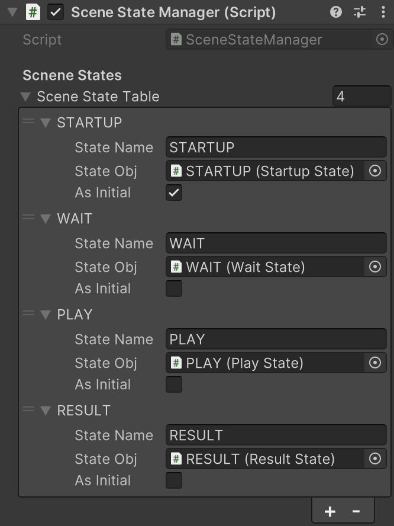| パラメータ | 値 |
|---|---|
| StateName | 呼び出し用のステート名 |
| StateObj | State オブジェクトへの参照 |
| AsInitial | 初期遷移先のフラグ |
各 State クラス内の実装を確認してみましょう。（StartupState.cs / WaitState.cs / PlayState.cs / ResultState.cs）
StateBase クラスを継承すると以下の関数を定義して利用できます。
| 関数名 | 呼ばれるタイミング |
|---|---|
| StateStart() | ChangeState()をコール後、次のステートへ毎遷移後の最初 |
| StateUpdate() | ChangeState()をコール後、次のステートへ遷移後以降の毎フレーム |
| StateExit() | ChangeState()をコール後、現在のステートから遷移する直前 |
| StateExitAsync() | ChangeAsyncState()をコール後、フェードが完了後の現在のステートから遷移する直前 |
これらの State クラス内の関数は SceneStateManager により、管理制御された特定のタイミングで呼ばれることになるため、MonoBehaviour の基本関数である、Awake() Start() Update() 等と干渉せずに組み合わせて利用することができます。
Note
MonoBehaviour が用意する関数を理解していない場合は、Unity ドキュメントを確認してください。
また、この SceneStateManager を利用している場合、アプリケーション内の一番最初のプログラム開始地点（エントリーポイント）は、AsInitial が有効な State の StateStart() です。デフォルトでは StartupState の StateStart() になります。流れとしては、AppMain の Start() から WaitForEndOfFrame() によって0フレーム目の最後のタイミングで SceneStateManager の InitState() が呼ばれ、初期 State の StateStart() が開始されます。
Note
StartupState について
アプリケーション内で最も最初に遷移する初期 State ですが、StartupState.cs の StateStart() では何も実装されておらず、次の State にすぐ遷移するのが確認できます。ソース内のコメントにも記述していますが、この State は不要だと思っても削除しないようにしてください。とくに問題がない限りそのまま利用するのをお勧めします。
例えば将来、アプリケーションが起動する前に初期設定処理が追加で必要になったとします。センサーを利用する場合などはセンサー機器の起動完了を待つ必要があるでしょう。通信を行って API リクエストの結果によりアプリケーションの初期化を待つ場合もあるでしょう。この StartupState があることで、機能拡張の「余地」が生まれます。
さて、ここで State を利用しない場合のプログラム構成を考えてみます。
例えば、各場面場面で挙動を切り替える必要があるオブジェクトが複数あったとします。それぞれが Update() 内でそれぞれ複数のフラグを管理し、if 文などで分岐処理する構成が考えられます。各オブジェクト内の各 Update() で、同じようなフラグ管理によって切り替え処理を行うわけです。
コード内の記述部分が、バラバラなファイルと場所に散らばることになり、管理が煩雑になるのが容易に想像できます。ステートパターンはこのような切り替え処理のためのデザインパターンです。State という状態を表すクラスによって、横串の共通項で処理をまとめることができます。この方法はコードをうまく整理できる場所を提供してくれます。
SceneStateManager の説明が少し長くなってきましたが、もう一つの重要機能 Context を解説します。
// StateBase クラスのコンテキストを渡しての通常遷移
AppMain.Instance.sceneStateManager.ChangeState("PLAY", context);
// AsyncStateBase クラスのコンテキストを渡してのフェード付き遷移
AppMain.Instance.sceneStateManager.ChangeAsyncState("PLAY", context);
ChangeState() / ChangeAsyncState() の 第2引数には System.Object context を渡すことができ、渡された State では StateStart() 内でデータを受け取って扱うことができます。
public class PlayState : StateBase
{
public override void StateStart(object context)
{
base.StateStart(context);
// object型をキャストして扱う
string test = (string)context;
}
}
State 間でデータの受け渡しをすることができるため、データ格納用の GameObject であったり、public なデータの参照先を別途用意する必要がなくなります（global static なデータ保持はやめましょう）。
この Context 機能が有用になるケースとはどういった場合でしょうか。この State パターンの仕組みで構築されたプログラムのデバッグ作業を想像してください。
デバッグのため目的の State まで遷移が必要です。最初から順番に遷移させていく操作は必要でしょうか？ NO です。単純に遷移しているだけであれば「State 間で依存していない状態」なので、目的の State へ直接遷移させることで効率的にデバッグ作業が行えるでしょう。
では、途中で何らかの必要な状態を作り出して（例えばチェックボックスをチェックするなど）、遷移させる必要がある場合はどうでしょうか？それぞれの State で必要な状態を作り遷移している場合です。これは「State 間で依存している状態」と言えます。
この状態の場合、 Context の受け渡しによって依存を解消することができます。具体的にはデータ型クラスを作成し、Context により状態情報を反映したデータ型クラスを受け渡すことで、各 StateStart() ではそのデータで初期化して状態を再現することができます。
こうすると、どんな場合であっても、データ型クラスを new() して受け渡してやるだけで、途中の State からの実行が可能になります。つまり、各 State は遷移の順番には依存せず、前の State から渡される Context にのみ依存して、毎 StateStart() で初期化して始まるべきです。いつでも、どのタイミングからでも正しくアプリケーションを開始することができるでしょう。
ここで開発作業のコツを一つ紹介します。
まず開発作業を開始する前に、必要機能の一覧をリストアップしましょう。また、アプリケーションの状態を場面に分けて整理してみましょう。おおよそ場面の切り分け整理が出来たならば、それを State に当て嵌めていきます。
プログラム構成が整理され始めて来たのではないでしょうか？この作業こそがプログラム設計です。
Managers / TimeManager
時間経過によるタイマーイベントを管理するマネージャークラスです。デフォルトでは MainTimer というタイマー（TimerEvent クラス）を用意して登録されています。
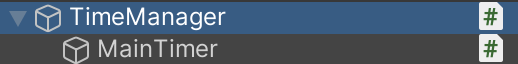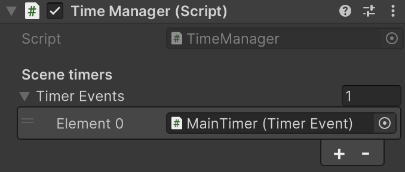
コード内では以下の方法でイベント設定をし、タイマーを開始することができます。 タイマーは必要に応じて追加します。タイマーは数を増やすとスタート / リセットの管理が大変になるので気を付けてください。同じタイマーを使い回す方法も検討してみると良いでしょう。
// タイマー完了イベントを設定 +=は呼ばれるたびにイベントが追加されることに注意
AppMain.Instance.timeManager.mainTimer.OnCompleteTimer += (sender) => { Debug.Log("OnCompleteTimer"); };
// タイマー毎秒イベントを設定 +=は呼ばれるたびにイベントが追加されることに注意
AppMain.Instance.timeManager.mainTimer.OnTimer += (sender, sec) => { Deug.Log("OnTimer:" + sec.ToString()); };
// タイマーを開始（秒を指定 繰り返しなども設定可能）
AppMain.Instance.timeManager.mainTimer.StartTimer(10);
Managers / SoundManager
アプリケーション内のサウンドを一括管理するマネージャークラスです。
一般的に Unity でのサウンド管理は煩雑になりがちです。音を再生する AudioSource のコンポーネントが、音素材ごとに作成されて配置されるため、それらをそれぞれ再生管理する都合上、管理場所がバラバラになってしまうのが原因です。
このマネージャークラスでは、それらを一箇所の設定にまとめることで、シンプルなサウンド再生管理を提供します。
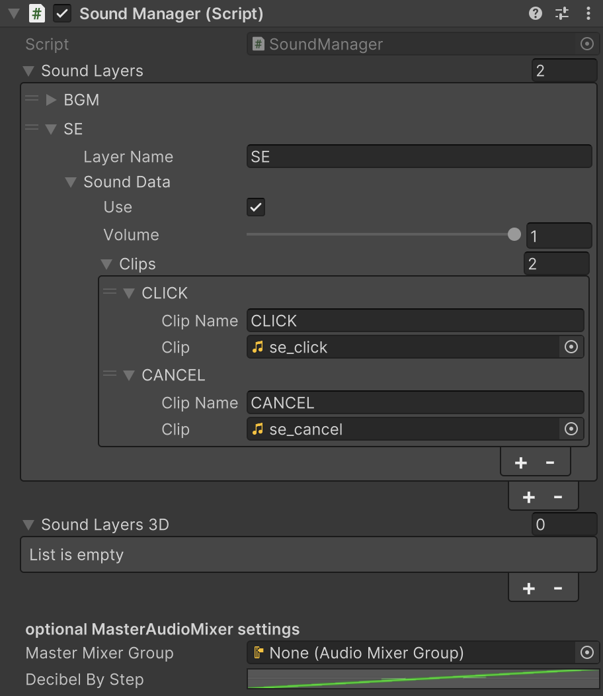レイヤーとクリップという概念を設けており、レイヤーには音声グループごとの設定が可能で、各レイヤーごとの音声ボリュームを設定することができます。また、再生時呼び出し用のレイヤー名を設定します。クリップには実際の音声素材を設定し、同様にクリップ名を設定します。
コード内では下記のように再生を行い、デフォルトではオーバーラップ設定で再生されます。BGM を再生する場合などは引数によりループ再生なども指定できます。
// 通常再生
AppMain.Instance.soundManager.Play("SE", "CLICK");
// オーバーラップ無しでループ再生
AppMain.Instance.soundManager.Play("BGM", "CLIP", false, true);
本来再生に必要な AudioSource は内部で自動生成され管理されているため、何も気にせずに簡単に再生が可能です。また、3D Layer では、3次元音声設定のための配置情報も必要となるため、自分で AudioSource を設定した GameObject を設定することができます。
Managers / UserInputManager
ユーザーの入力処理を一つにまとめるためのマネージャークラスです。汎用的に利用できるキー入力をいくつか用意していますが、他にも入力が必要な場合はこのクラスに追加していくことで、入力処理を一箇所にまとめることができてプログラムの見通しが良くなります。あらかじめ用意しているキー入力は下記になります。
| キー | 機能 |
|---|---|
| Esc | アプリケーションの終了 |
| D | デバッグ機能のトグル |
| R | ApplicationSetting.xml の再読み込み |
| Backspace | 現在の GameView をスクリーンショットしてデスクトップに保存 |
Note
開発を予定する機能として、名前入力などキーボード入力操作が必要な場合は無効化が必要です。
Managers / DebugManager
アプリケーション内のデバッグ機能を管理します。具体的にはこのマネージャークラスはデバッグ状態フラグ isDebug を持っていて、各デバッグ機能はこのフラグによって管理されています。
if(AppMain.Instance.debugManager.isDebug)
Debug.Log("debug mode");
else
Debug.Log("not debug mode");
このフラグは ApplicationSetting.xml の IsDebug 項目で初期設定を変更でき、UserInputManager により D キー の入力でデバッグ状態をトグルできます。
外部パッケージの IngameDebugConsole をあらかじめ組み込んでいるため、デバッグ状態に同期して表示されるようになっています（Graphy のパッケージを利用している場合も同様です）。他のデバッグ機能を追加する際も同様の実装で、isDebug によって管理できるようにするとよいでしょう。
また、この GameObject にはマウスカーソルの表示 / 非表示を行う VisibleMouseCursor.cs コンポーネントもアタッチされています。 ApplicationSetting.xml の UseMouse 項目で表示状態を設定できます。タッチパネル動作のアプリケーションにおいてはマウスカーソル表示が不要となりますが、デバッグ時に必要となるためこのマネージャークラスが表示管理を受け持っています。
3-3. Cameras グループ
カメラオブジェクトをまとめるグループです。カメラオブジェクトのオブジェクト名の先頭には Depth パラメータの値を付加しておくと、レンダリング順が一目瞭然となるため、おすすめします。簡単なルールですが、いつでもすぐに視認できるので、設定間違いも発生し辛くなるでしょう。
アプリケーションの現在の状態を表す Hierarchy ウィンドウを一目瞭然にして、常に整理しておくことを忘れないでください。
また、それぞれのカメラオブジェクトには、CameraGizmoDrawer.cs コンポーネントがアタッチされているのを確認してください。このコンポーネントは Editor の Scene ビュー表示に、カメラの視野範囲を表す視錐台を描画します。通常の Unity では選択状態のカメラのみ視錐台が描画されますが、非選択時にも描画されるようになるため、シーンの現状確認が容易になります。
3-4. Environments, GUIs, Objects グループ
その他のグループはプレースホルダです。Light オブジェクトなどは Environments へ、GUI 関係のオブジェクトは GUIs へ、3D モデルなどは Objects へとまとめると良いでしょう。
繰り返しになりますが、データを常に整理しておくことは重要で、構造化されたプログラムやバグのないプログラムに直接繋がっていきます。また、動作中プログラムの状態を視覚的に管理できる Hierarch ウィンドウを利用して、データやオブジェクトを目が届く場所で常に把握しておくこと、それは頭の中でイメージするしかないプログラムの複雑な面を補助してくれます。
4. プロジェクト内リソース
プロジェクトデータ内リソースを解説します。
4-1. / Editor
AssetPostprocessUTF8Encode.cs
Editor 拡張。プロジェクト内にインポートされた全ての .cs ファイルに対して、テキストエンコードを確認し、UTF8(BOM) に自動で変換します。ソースコードファイルが UTF8(BOM) エンコードではない場合、日本語が文字化けするための処置です。
EditorEnhancements
Editor 拡張。Hierarchy ウィンドウにコンポーネントアイコンを表示します。また、Poject ウィンドウにファイル拡張子を表示するなどいくつかのヘルパー機能があり、メニューの Preference 設定から機能の有効 / 無効を設定できます。
StateGenerator
Editor 拡張。State クラスを新規生成する際に利用できるヘルパー機能です。メニューから、EditorScript / GarageKit / StateGenerator で利用できます。
4-2. / Plugins
I18N.CJK.dll
C# で日本語コード Shift_JIS を扱うためのマネージド（C#用）DLL。
Log4Net
C# のロギングライブラリである Log4Net を Unity 対応させたアセットです。通常 Log4Net を利用する際には細かな設定が必要になりますが全て内部に隠蔽しているため、フォルダ内にある Log4Net プレハブをシーンに配置するだけで利用可能です。出力されたログはプロジェクトフォルダ直下に Log フォルダ が作成され、日別ファイルで保存されます。
// Debug.Log にも同時に出力される
Log4Net.Logger.Log(LOG_LEVEL.INFO, "メッセージ");
Microsoft.Win32.Registry.dll
3-1. System / ResolutionHelper で説明している StandalonePlayerResolutionHelper.cs がレジストリにアクセスするために利用している dll です。
4-3. / Prefabs
Utils / UI / MovieControllPanel
動画再生用のコントロールパネルを簡単にセットアップするためのプレハブです。利用の際には別途 AVProVideo の外部パッケージが必要になります。また、Scripts/Utils/UI/UIMovieControllPanel.cs ソースコード内の #define 定義を有効にした上で、プレハブのインスペクタ設定を行ってください。
Utils / VR_UI / CanvasGroupGuideArrow
VR などで、視線方向を誘導する際の矢印表示のプレハブ
Utils / VR_UI / CanvasGroupTelop
VR などで、テキストテロップのフェードインアウト表示を簡単に行うためのプレハブ
4-4. / Scenes
本パッケージのフレームワークは、基本的に Main.unity をカスタムしていくような作業フローを想定しています。
シーンファイルに紐づく Lighting データ（ライティング設定でベイク処理を行った際のデータ）などもシーンファイルと同じ階層に自動作成されるため、ここにまとめて整理しておくと良いでしょう。
Examples
各スクリプトの使用例をサンプルシーンで確認できます。
| シーン | 内容 | 使用スクリプト |
|---|---|---|
| ApplicationSettingExample | 外部設定ファイル機能のサンプル | ApplicationSetting.cs |
| CameraControllExample | カメラ操作機能のサンプル | FlyThroughCamera.cs PinchZoomCamera.cs OrbitCamera.cs UrbanViewerLikeCamera.cs Panorama360Camera.cs |
| MultipleSceneExample | SceneStateManager の設定を変更し、複数シーンを利用する場合のサンプル | SceneStateManager.cs |
| EventExample | 各イベント処理のサンプル | TimelineEventActionList.cs TimerEvent.cs ButtonObjectEvent.cs SevenTapLikeAndroid.cs |
| LogExample | ログ出力のサンプル | Log4Net.cs |
| TimelinedStateExample | 時間制御のタイムライン機能を利用したステートのサンプル | TimelinedSceneStateBase.cs |
| VRGuiExample | VR_UI プレハブの利用サンプル | UIFadeTelop.cs VRGazeGuideArrow.cs |
4-5. / Scripts
Utils フォルダには、本パッケージの便利スクリプトが纏まっています。各スクリプトの詳細はコードリファレンスを参考してください。
スクリプトの機能カテゴリ別や C# の namespace ごとにフォルダを作成し、整理するのが良いでしょう（Java のようにフォルダ階層 = namespace ではありません）。
4-6. / Shaders
/ShaderLib フォルダにはカスタムシェーダーを纏めており、マテリアル設定のシェーダー選択から、Custom / ShaderLib にリストされます。シェーダー名で機能が判断できるようにしていますが、その中で比較的利用し易いものを紹介します。
| シェーダー | 効果 |
|---|---|
| Unlit-MaterialAlpha | 照明効果無し、カラー値によるテクスチャ色をそのまま表示 |
| Unlit-CombineAlpha | Unlit-MaterialAlpha にアルファ用のテクスチャを追加で設定可能 |
| Unlit-SeparateAlpha | Unlit-MaterialAlpha にアルファ用のテクスチャを別画像で設定可能 |
| ObjectMask | 3D メッシュを「透明」で描画することで先に描画されているカラーバッファをクリアする |
| ShadowPlane | ライトで投影された影のみを描画する |
| Contrast | 設定されたテクスチャにレベル補正を行いコントラストを調整する |
4-7. / Textures
テストパターンなどいくつかの汎用的に利用できる画像素材を用意しています。
4-8. StreamingAssets / UnityResolutionReset.exe
3-1. System / ResolutionHelper で説明している StandalonePlayerResolutionHelper.cs の内部機能を切り出し、単体実行できるようにした .exe ファイルです。コマンドライン実行することでレジストリから解像度情報を強制削除できます。
実行方法
$ UnityResolutionReset.exe {CompanyName} {ProductName}